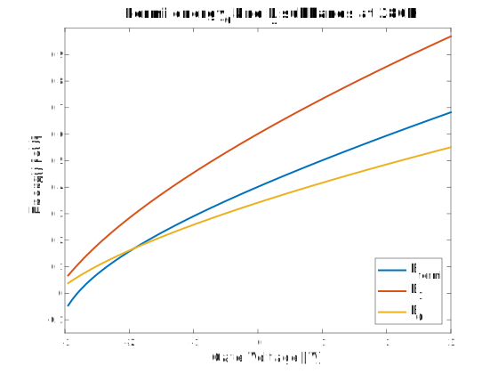

high-speed and high-power applications. These devices offer advantages such as high breakdown voltage, high charge density, and good electron mobility [t7.3]–[t7.5]
Charge density Analytical Model
In order to rapidly and accurately simulate HEMT devices an analytical expression for density of the two dimensional gas $n_s$ is required.
So far $n_s$ has been usually expressed with numerical calculations, which require high computational power due to their iterative methods, or through empirical models, which use large number of empirical parameters obtained by experimental data.
At the beginning of the 80s the interdependence between $n_s$ and $E_f$ was at first assumed constant
, then linear and quadratic
, however those models are not able to properly predict the results while changing the operating conditions at which they were studied. In particular Cutoff Voltage and Temperature dependences have shown to be critical.
In this report a physical-based analytical model for the relation of $E_f$ and $n_s$ is presented following the work done by S. Khandelwal, N. Goyal and T. Fjeldly
, which takes into account the first two energy sub-bands present in the quantum well and their contribution to the $n_s$ variation.
Discussion of the contribution of sub-bands to $n_s$
The reason why only the first two sub-bands are taken into account relies not on the number of bounded states present in the quantum well but on their probability of occupation. To give an estimate of those values we have assumed that the quantum-well is triangular and the energies bounded states can not be higher than the built in potential.
::::
Fermi energy and Sub-bands with respect to Gate Voltage
In order to obtain $n_s$ we solved numerically the two equations system of eq 1-2, as extensively described in chapter ##2DEG.
This is needed to find $E_f$, $E_0$ and $E_1$ using the eq. (citE=n^2/3). Below the plot show the relation between $E_f$ and the two sub-bands with respect to the gate voltage and the temperature.

As we can see in the plot $E_f$ intersect only $E_0$ and this point is important because allow to distinguish two regions. To further highlight this behavior we plot the difference between $E_f$ and the two energy sub-bands $E_0$ and $E_1$.
$E_1$ is always larger than $E_f$ and $E_0$ while $E_0$ in smaller then $E_f$ in region 1 while in the second region $E_0$ is always greater then $E_f$. The width of the first region increase with the temperature. (WHY?!?)
A different model is developed for each regions, then they will be unify to obtain a continuous solution.
Region I and approximations
In region I the second term of eq. (1cit) is negligible and the first logarithm term can be approximated to the exponential component of its argument. Therefor eq. ##1 can be rewritten as
In the following plot we can see how the approximation fit well the Fermi Energy in the first region, the maximum absolute error is about ## and lies on the separation line between the two regions.
In order to find out how the gate bias determinate explicitly $E_f$ and $n_s$ we have to delete the interdependence of $E_f$ and $n_s$ in eq
. To do so we replace $n_s$ in eq
with the following expression
Since $E_f$ is much smaller than $V_{\text{go}}$ we can expand the Taylor Series to the first order in $E_f^I/V_{\text{go}}$ . Despite the fact that for voltages very close to cutoff $E_f^I$ is not significantly smaller than $V_{\text{go}}$ the ultimate results provided by this work are in agreement with the numerical solution. This point is extensively discussed in chapter #7cicciarculo7#.
Hence the obtained $E_f$ dependence on the gate bias is:
Unified model and explicit formula for 2DEG charge density
Conclusion
References
prova
AIGaAs-GaAs Two-Dimensional Electron Gas FET. IEEE TRANSACTIONS ON ELECTRON DEVICES, VOL. ED-29,NO.6,JUNE 1982
Analytical Expression for Fermi Level Versus Shekt Carriers Concentration for HEMT Modeling, S. KOLA et al, IEEE ELECTRON DEVICE LETTERS, VOL. 9, NO. 3, MARCH 1988
A Physics-Based Analytical Model for 2DEG Charge Density in AlGaN/GaN HEMT Devices, S. Khandelwal, N. Goyal and T. Fjeldly, Fellow, IEEE TRANSACTIONS ON ELECTRON DEVICES, VOL. 58, NO. 10, OCTOBER 2011.